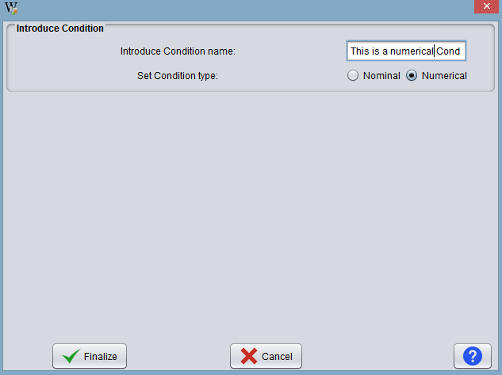
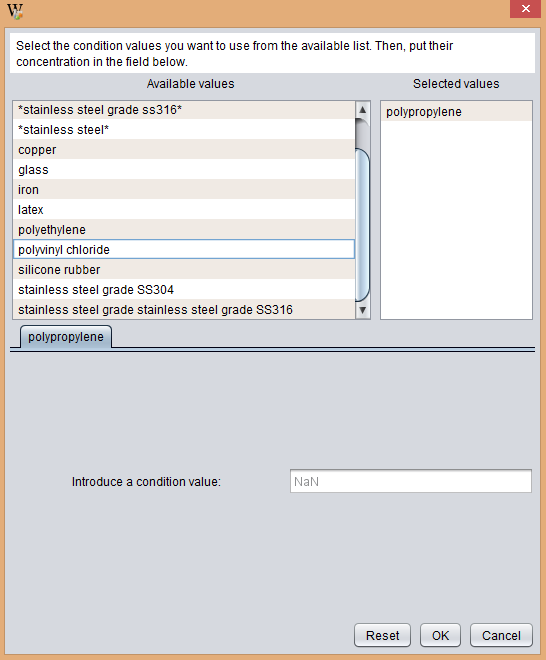

Bew operation is supported by metadata supplied by the biofilms community repository BiofOmics. Metadata includes the controlled vocabulary on the experimental methods of analysis, and different kinds of experimental conditions (e.g. adhesion materials, culturing media and antimicrobial products).
Besides, granting access to these metadata, BEW allows the user to add new metadata. Currently, the user may create 3 types of conditions:
- Numeric: These conditions require the introduction of a
name for the Condition in its text box as shown in the following image.

- Nominal: These conditions imply the specification of a set of values, one by one.
- Metacondition: This is a special type of condition that results from the combination of values from pre-existing and individual conditions.
For example, the user may create a metacondition specifying a pre-defined medium supplemented with a given substance.
With this operation the user can add a new condition to the program files for use in future creations of experiments. When user click on this operation, the program opens a window like the one shown below:

Initially the user has the area Introduces Condition to indicate the name of the new condition and the type. The type of condition can be two fold:
- Numerical:
For example the temperature, it can takes from 0 to infinity.
- Nominal:
For example, a set of antimicrobials.

If the user indicates that the condition is numerical he does not have to do anything else. On the other hand, if the user indicates that the condition is nominal, the program creates another area in the dialogue.
Here, the user must indicate the values that have this condition. The user can create an empty nominal condition and include these values at a later stage, the operation of Add condition values. The button New Condition value is used to enter the value. Then, the user has to write the value of the condition in the text box.
Once the user finishes creating conditions must press the Finish button to accept changes.
Note: when using the condition and condition values created from these operations, they are displayed between **. This is because they are condition and condition values that are not validated by a curator.